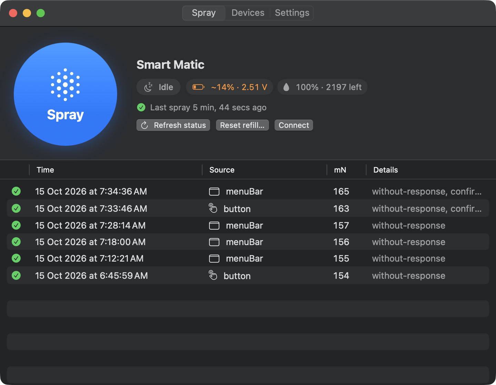
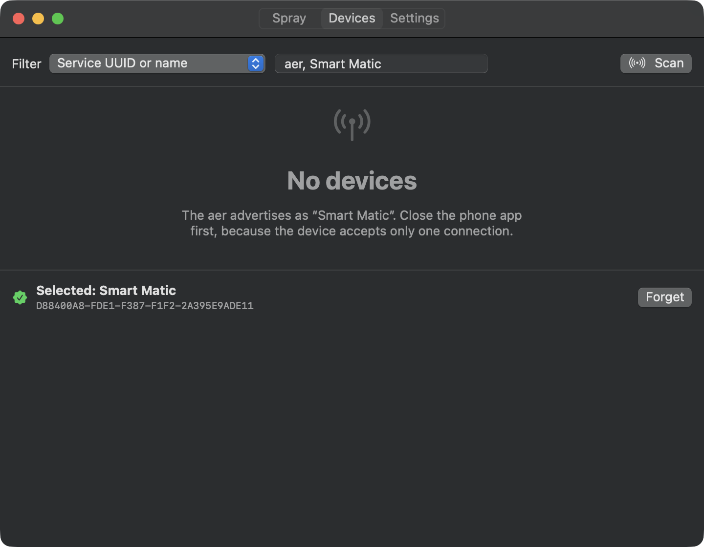
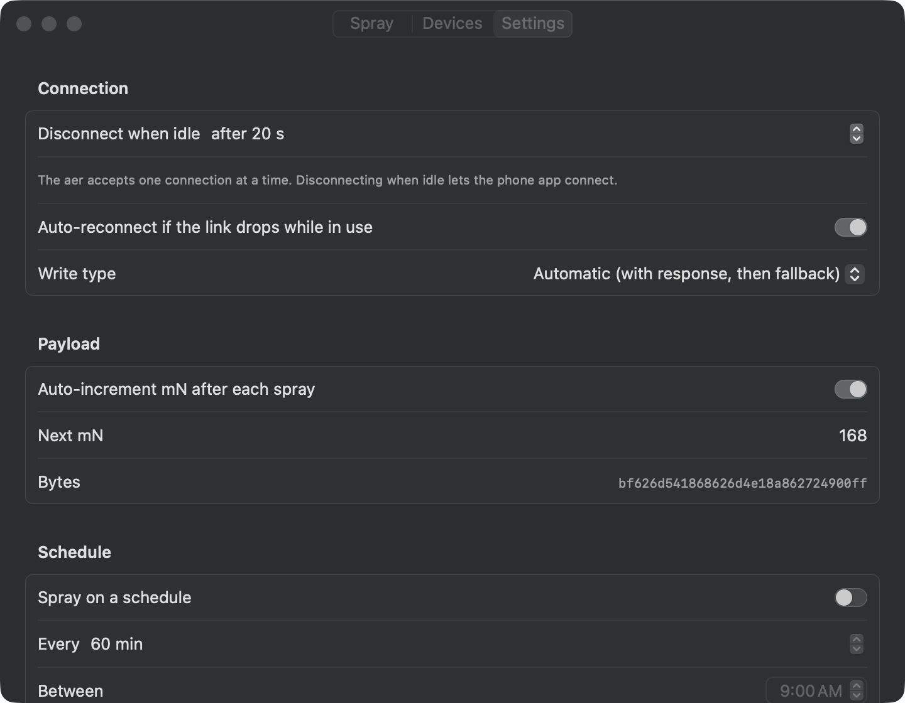

For the Godrej aer Smart Matic
Spray from your desktop.
AerControl talks to your aer over Bluetooth. Spray it from the menu bar, the tray, a hotkey, a widget or a schedule. No phone needed.
Try it. This is the command AerControl sends.
waiting for a spray…



Everything the phone app does, plus the desktop
Ways to spray
- The Spray button
- One big button in the app. Every spray is logged with time, source and result.
- Menu bar and tray
- Lives in the macOS menu bar. On Windows, left-click the tray icon to spray.
- Global hotkey
- ⌃⌥⌘S on macOS, CtrlAltShiftS on Windows. Works from any app.
- Schedules
- Spray every N minutes between two times of day, for example every 30 min from 09:00 to 18:00.
- Widgets
- Small and medium widgets with a Spray button: WidgetKit on macOS, the Widgets Board on Windows 11.
- Shortcuts and jump lists
Spray Air Freshener
in Shortcuts, Siri and Spotlight.Spray now
in the Windows jump list.- Command line
aerctl spray --count 3 --interval 5for scripts and automations.
What it reads back
- Battery
- Measured voltage and an estimated percentage. Warns below 2.8 V, like the Godrej app.
- Refill level
- Percent and sprays left, counted against the can's 2,200 sprays. Reset the count when you insert a new can.
- Confirmed sprays
- The device acknowledges each spray, so a green check means it actually sprayed.
Stays out of the way
- Shares the device
- Disconnects a few seconds after each spray, so the phone app or your other computers can use it too.
- Reconnects by itself
- Remembers your device and reconnects when you spray. Can start at login.
- Keeps itself current
- Checks for a new release once a day. Windows installs updates on its own.
Get started
- Open the disk image and drag AerControl into Applications.
- Open AerControl. If macOS says it can't check the app, open System Settings › Privacy & Security, scroll down and click Open Anyway. You only do this once.
- Click Allow when macOS asks for Bluetooth access.
- Open the Devices tab, click Scan and choose Smart Matic. AerControl remembers it.
- Click Spray. The history row turns green when the device confirms.
Add the widget
Right-click the desktop › Edit Widgets…, search for AerControl, then drag aer Spray onto the desktop. Turn on Launch at login in Settings so the widget always has the app to talk to.
Windows
Windows 10 (19041) or later · Windows 11 for widgets
- Run AerControl-Setup. If SmartScreen says it doesn't recognize the app, click More info › Run anyway.
- Approve the one admin prompt. It trusts AerControl's signing certificate, then Setup installs the Windows App Runtime and AerControl.
- Start AerControl from the Start menu. It lives in the system tray.
- Open Devices, click Scan and choose Smart Matic.
- Click Spray, or left-click the tray icon.
Add the widget (Windows 11)
Press WinW, click +, choose AerControl › aer Spray. Updates install automatically through App Installer.
No internet on the PC, or Setup failed?
Setup writes a log to %LOCALAPPDATA%\AerControl\install.log. To install offline instead, download
the x64 zip (or ARM64),
extract it, right-click install.ps1 › Run with PowerShell.
Uninstall from Settings › Apps like any other app.
Command line
aerctl is a single binary. Put it anywhere on your PATH.
# find your device and remember it
aerctl scan
aerctl remember <UUID or address>
# spray, or spray three times five seconds apart
aerctl spray
aerctl spray --count 3 --interval 5
# battery, refill level, firmware
aerctl status
battery: 2.51 V (~13%, estimated) LOW
refill: 0% (0 of 2200 left, 2832 sprays since reset)
firmware: 3.0.6-T1
# after inserting a new can
aerctl refill-reset --yesIf something's off
“Timed out during connect”
The phone app is probably still connected. Close it, or turn off Bluetooth on the phone, then spray again.
Windows: “The aer GATT service wasn't found”
Close the phone app first. If you paired Smart Matic in Windows Bluetooth settings, remove it there: AerControl doesn't need pairing, and a paired device can leave Windows with an out-of-date list of services.
Nothing sprays, and there's no error
Run aerctl probe and check the log. On macOS it's in ~/Library/Logs/AerControl/; on Windows, in the app's logs folder.
macOS says “No Bluetooth access”
Open System Settings › Privacy & Security › Bluetooth and turn on AerControl.
The Windows widget is missing
Widgets need Windows 11 and the app installed with install.ps1. A debug build run from Visual Studio doesn't register them.
More in the README, or open an issue.